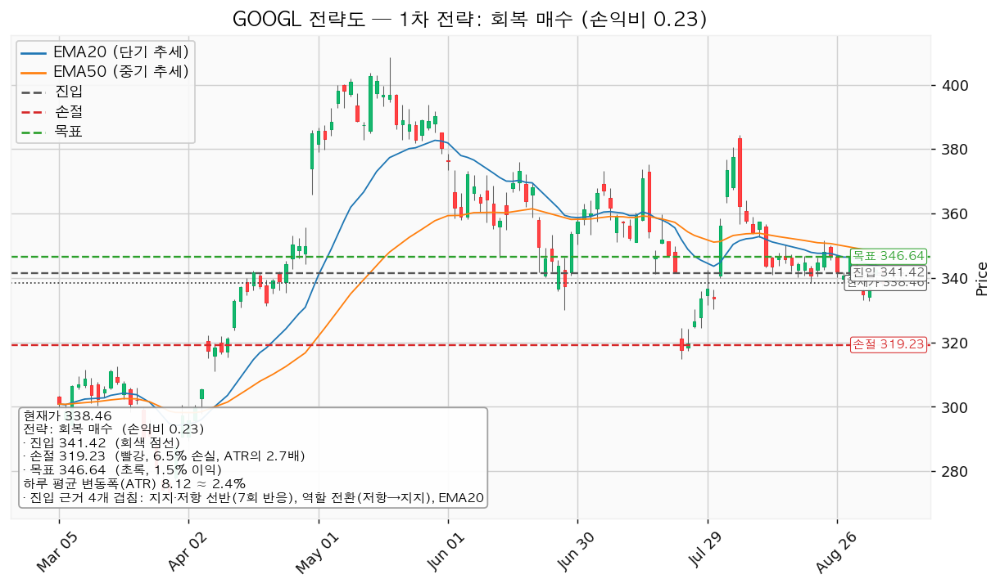
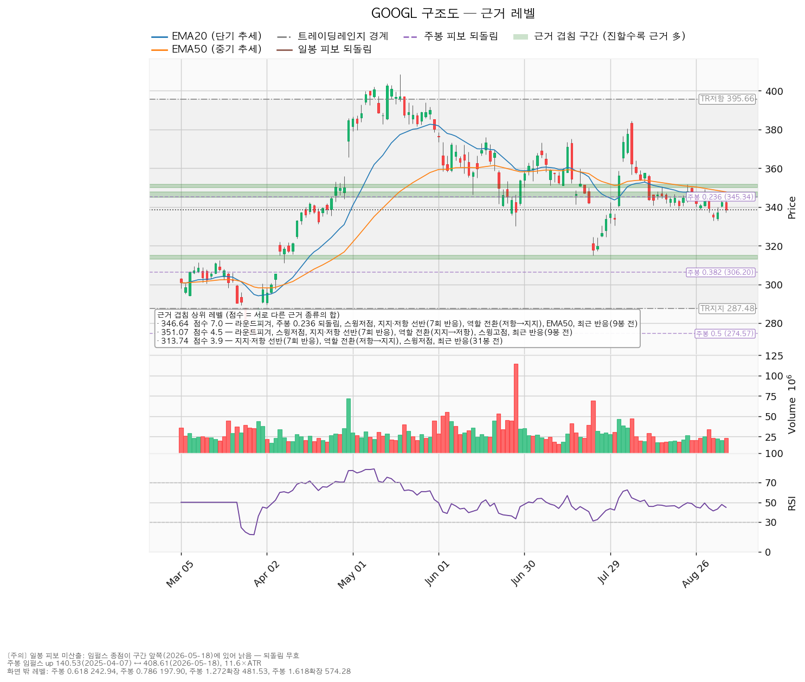
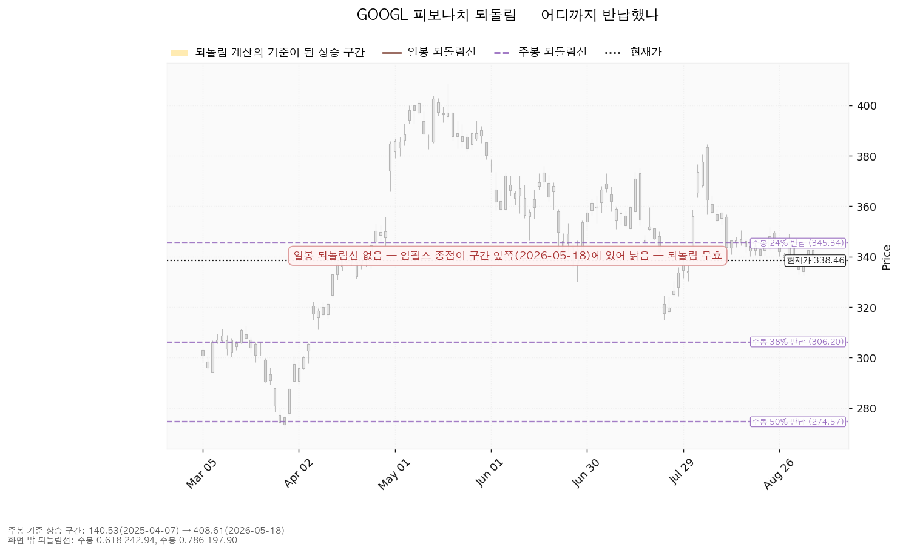
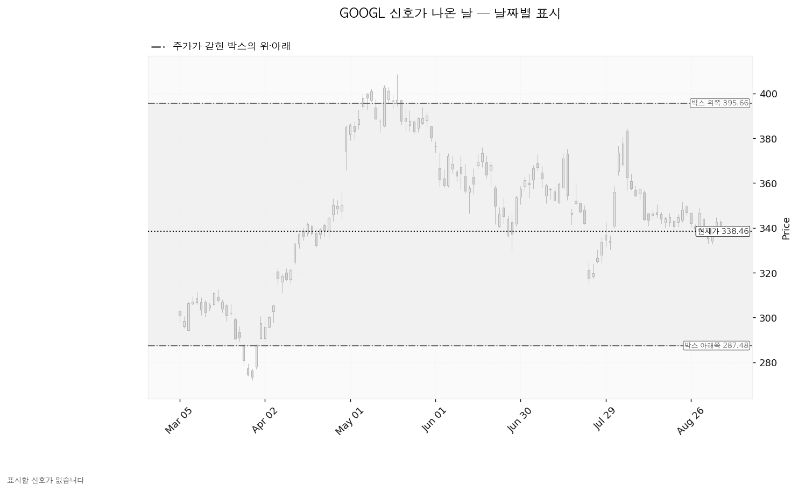

알파벳 A(GOOGL)는 구글 검색과 유튜브, 안드로이드, 구글 클라우드를 운영하는 미국 기업이며, 매출의 대부분이 광고에서 나옵니다.
| 구분 | 가격 | 판정 방식 | 현재가 대비 | 상태 |
|---|---|---|---|---|
| 회복선(진입 조건) | 341.42달러 | 일봉 종가로 회복한 뒤 되돌림에서 지지되는지 | +0.87% (0.36 ATR) | 회복 대기 |
| 집행 손절 | 319.23달러 | 진입한 경우에만 유효 — 이번엔 진입하지 않으므로 무의미 | -5.68% (2.37 ATR) | 미적용 |
| 관망 종료 기준 | 321.26달러 | 일봉 종가가 이 아래로 마감 | -5.08% (2.12 ATR) | 유지 중 |
| 확인선 | 346.64달러 | 일봉 종가 돌파 후 되돌림 지지 확인 | +2.42% (1.01 ATR) | 미돌파 |
| 폐기선(구조) | 287.48달러 | 이탈 → 3거래일 내 종가 회복 실패(또는 279.36달러 종가 이탈) → 반등이 저항으로 확인 | -15.06% (6.28 ATR) | 유지 중 |
| 항목 | 값 |
|---|---|
| 현재가 | 338.46달러 |
| EMA20 / EMA50 | 343.38달러 / 347.78달러 (현재가는 각각 -1.45%, -2.75% 아래) |
| RSI(14) | 44.8 (중립보다 약간 아래) |
| ATR(하루 평균 변동폭) | 8.12달러 = 주가의 2.4% |
| 횡보 박스 | 287.48 ~ 395.66달러 (박스 안 위치 47%) |
| 박스 판정 구간 | 최근 180일봉 (전체 조회 754봉) |
| 8월 고점 대비 | 384.48달러(2026-08-05) 대비 -11.97% |
박스는 40·90·180일봉 세 창을 모두 시험한 뒤 180일봉이 선택됐습니다. 이 창에서 가격이 박스 안에 머문 비율이 94.4%로 가장 높았기 때문입니다(40일봉 85.0%, 90일봉 88.9%). 즉 지금 보고 있는 것은 약 9개월짜리 큰 횡보이며, 폭이 하루 변동폭의 13.3배로 넓습니다. 박스가 넓다는 것은 하단까지 거리가 멀어 하단을 손절 기준으로 쓸 수 없다는 뜻입니다.
가격은 직전 구간(144.82~314.53달러)에서 위로 올라와 이 박스에 들어왔습니다. 위에서 내려온 것이 아니라 아래에서 올라온 자리이므로, 이 박스는 다시 오르기 전의 매물 소화일 수도 있고 상승분을 나눠 파는 자리일 수도 있습니다. 갈리는 것은 박스 안쪽에서 일어나는 일입니다.
박스 안쪽 관측치: 지지 테스트는 2025-12-17부터 2026-03-30까지 6회 있었고, 그때의 거래량은 평균 대비 0.74~1.19배로 혼조였습니다(줄어드는 방향이 아닙니다). 박스 안 저점은 절하됐고(296.12 → 294.08 → 272.11달러), 상승봉과 하락봉의 거래량비는 0.92로 하락봉 쪽이 약간 더 무겁습니다. 세 가지를 합치면 박스 안쪽 판정은 중립이며, 매집이라고 부를 근거도 분산이라고 부를 근거도 아직 충분하지 않습니다.
엔진이 산출한 셋업은 하나뿐이며, 그것이 대표 셋업입니다. 손익비 0.23 × 구조 증명도(회복 확인형) × 근거 겹침 3.7점으로 선정됐습니다. 비교 대상이 하나뿐이라 "손익비 1등이 아닌데 대표"라는 트레이드오프는 이번엔 발생하지 않았습니다.
| 항목 | 내용 |
|---|---|
| 이름 | 회복 매수 — 롱(매수) |
| 진입 | 341.42달러 (일봉 종가로 회복한 뒤) |
| 진입 근거 겹침 | 3.7점 / 340.45~343.38달러 — 7회 반응한 지지·저항 선반 + 역할 전환(저항→지지) + EMA20 + 최근 반응(11봉 전) |
| 손절 | 319.23달러 — 근거 겹침 구간(321.26~325.00달러, 2.8점) 바로 아래에 둔 값입니다. 구간 안쪽이 아니라 그 아래로 밀어냈기 때문에 손절 폭이 넓어졌고, 그만큼 손익비가 낮아졌습니다 |
| 목표 | 346.64달러 — 겹침 7.0점(라운드피겨 + 주봉 0.236 되돌림 + 스윙저점 + 7회 반응 선반 + 역할 전환 + EMA50) |
| 손익비 | 1:0.23 (손절 폭 22.19달러 = 2.73 ATR, 진입가 대비 6.5%) |
| 구조적 손절 기준 손익비 | 이 손절이 이미 겹침 구간 아래에 둔 구조적 손절이므로 별도의 구조 기준 손익비가 따로 산출되지 않았습니다. 표기된 0.23이 곧 구조 기준 값입니다 |
| 엣지의 종류 | 모멘텀 — "저항을 종가로 되찾으면 그 방향이 이어진다"는 전제. 자주 틀리고 소수가 크게 맞는 유형입니다(이 유형의 일반적 성격이며, 이 엔진에서 측정한 값이 아닙니다) |
| 구조 증명도 | 회복 확인형 — 저항을 종가로 회복한 뒤에만 들어가므로 진입가는 불리하지만 구조가 먼저 증명됩니다 |
| 청산 계획 | 중간 레벨이 없어 분할 없이 단일 목표 전량 청산입니다. 1차 목표 346.64달러에서 100% 청산이며, 본전 스탑으로 옮길 중간 구간이 없어 전 구간 손익비도 1:0.23 그대로이고 1차 익절 후 하한 손익비는 따로 산출되지 않았습니다 |
| 판정 | 패스 |
왜 패스인가: 손절은 22.19달러(2.73 ATR)로 넓은데 목표까지는 5.22달러(0.64 ATR, +1.53%)뿐입니다. 손익비가 1 미만이면 방향을 맞혀도 기댓값이 남지 않습니다. 손절을 좁히면 숫자는 좋아지지만 그 손절은 321.26~325.00달러 지지 구간 안쪽에 놓이게 되고, 그러면 지지에 닿기만 해도 잘려 나갑니다. 손절 위치를 옮겨 손익비를 만들지 않습니다. 손익비 0.23은 그 자체가 답입니다.

진입하지 않으므로 아래는 참고치입니다. 이 셋업을 실행했다면 1회 매매 손실 한도를 계좌의 1%로 잡았을 때 손절 폭 6.5%가 정해 주는 비중은 계좌의 15.4%입니다. 한 종목에 계좌의 13%를 넘게 싣지 않는다는 원칙에 따라 13%로 제한되며(계좌 1,000만원 기준 130만원, 이때 1회 손실 한도는 약 84,500원), 비중을 줄인 만큼 손실 한도도 1%에 못 미치게 됩니다.
청산은 목표에서 전량이고 트레일링은 걸지 않습니다. 진입에서 목표까지가 하루 평균 변동폭의 0.64배로 2배에 한참 못 미치므로, 다단 청산이나 트레일링을 얹을 폭 자체가 없습니다(이 2배 기준은 관행이지 정설은 아닙니다). 346.64달러를 종가로 넘어서는 구간은 이 포지션의 연장이 아니라 새 셋업입니다.
| 단계 | 조건 | 의미 | 행동 |
|---|---|---|---|
| ① 관찰 | 일봉 종가가 341.42달러 아래로 마감 | 구조 이탈의 시작일 뿐이며 아직 무효가 아닙니다. 되돌아 올라오면 지지선을 잠깐 뚫고 회복하는 움직임(속임수 하락)일 수 있습니다 | 신규 진입만 중단. 집행 손절은 그대로 둡니다 |
| ② 경고 | 이탈 후 3거래일 안에 341.42달러를 종가로 회복하지 못함, 또는 그 전에 일봉 종가가 333.30달러 아래로 마감(하루 평균 변동폭 1배만큼 더 밀림) — 둘 중 먼저 오는 쪽 | 저항 회복 실패 가능성이 우세해집니다 | 잔여 비중 축소. 반등이 나오면 이 가격에서의 반응을 확인합니다 |
| ③ 무효 | 반등이 341.42달러에서 막히고 그 아래로 되밀림(지지가 저항으로 전환) | 셋업 폐기 — 구조 해석이 틀린 것으로 확정 | 포지션 정리, 새 구조가 만들어질 때까지 관망 |
집행 손절 319.23달러는 이 판정과 무관하게 별도로 작동합니다. 그리고 장중에 잠깐 341.42달러 아래를 찍는 것은 어느 단계에도 해당하지 않습니다.
회복선 341.42달러를 종가로 되찾은 것을 아직 확인하지 못했으므로, 현재가 338.46달러에서 미리 사는 것은 권하지 않습니다. 기다릴 좌표는 두 가지입니다.
주목할 점은 5봉 뒤 EMA20 투영치(341.45달러)가 회복선 341.42달러와 거의 같고, EMA50 투영치(346.09달러)가 확인선 346.64달러 바로 아래라는 것입니다. 즉 가격이 지금 자리에 그대로 있기만 해도 평균선이 내려와 회복선에 닿습니다. 회복 여부는 가격이 올라가느냐뿐 아니라 얼마나 오래 여기 머무느냐로도 갈립니다.
① 상승 전환 — 341.42달러를 종가로 회복하고 되돌림에서 지지된 뒤 346.64달러를 종가로 돌파하는 경우입니다. 구조로는 속임수 하락 확인 → 강세 신호 → 되돌림 지지 → 상승 국면의 순서입니다. 행동은 341.42달러 회복·지지 확인 후 분할 진입, 346.64달러 돌파 시 비중 확대입니다. 다만 이 리포트가 낸 좌표(341.42 → 346.64)로는 손익비가 1에 못 미치므로, 실제 진입은 346.64달러를 종가로 넘긴 뒤 목표를 다시 잡은 새 셋업에서 합니다.
② 횡보 지속 — 287.48달러를 지키면서 346.64달러 아래에서 박스가 이어지는 경우입니다. 구조는 그대로 유지되며, 매물을 소화하는 데 시간이 필요한 국면입니다. 부정적인 신호가 아닙니다. 신규 진입은 보류하고 아래 세 가지를 추적합니다.
세 항목이 모두 아직 돌아서지 않았다는 점이 이번 판단을 관망으로 두는 이유입니다. 이 중 하나라도 방향이 바뀌면 그때 다시 봅니다.
③ 시나리오 폐기 — 287.48달러를 이탈한 뒤 3거래일 안에 종가로 회복하지 못하거나 그 전에 279.36달러 아래로 종가 마감하고, 이어진 반등이 287.48달러에서 막히는 경우입니다. 그때는 매물 소화가 아니라 상승분을 나눠 판 구간이었다는 뜻이며 추가 저점 갱신 가능성이 열립니다. 포지션을 정리하고 새로운 바닥과 새 박스가 만들어질 때까지 관망합니다.
| 가격대 | 겹침 점수 | 근거 | 위치 |
|---|---|---|---|
| 345.00~347.78달러 (346.64) | 7.0 | 라운드피겨 + 주봉 0.236 되돌림 + 스윙저점 + 7회 반응 선반 + 역할 전환(저항→지지) + EMA50 + 최근 반응(9봉 전) | 위 +2.42% |
| 350.00~351.60달러 (351.07) | 4.5 | 라운드피겨 + 스윙저점 + 7회 반응 선반 + 역할 전환(지지→저항) + 스윙고점 + 최근 반응(9봉 전) | 위 |
| 340.45~343.38달러 (341.42) | 3.7 | 7회 반응 선반 + 역할 전환(저항→지지) + EMA20 + 최근 반응(11봉 전) | 위 +0.87% |
| 321.26~325.00달러 (322.50) | 2.8 | 7회 반응 선반 + 역할 전환(저항→지지) + 라운드피겨 | 아래 -4.72% |
| 313.16~314.90달러 (313.74) | 3.9 | 7회 반응 선반 + 역할 전환(저항→지지) + 스윙저점 + 최근 반응(31봉 전) | 아래 |
| 373.16~376.00달러 (374.75) | 2.9 | 스윙고점 3개 + 6회 반응 선반 + 최근 반응(36봉 전) | 위 |
겹침 점수는 서로 다른 종류의 근거가 같은 가격대에 몇 개 모여 있는지를 가중치로 합한 값입니다(같은 종류가 여러 개 붙어도 한 번만 가산됩니다). 이 표에서 읽어야 할 것은 세 가지입니다.
첫째, 위쪽 346.64달러가 가장 두껍습니다(7.0점). 여기에는 50일 평균선과 주봉 되돌림선, 그리고 실제로 7번 반응한 가격대가 모두 모여 있습니다. 목표이자 확인선인 이유이며, 동시에 여기서 막히면 되돌아 내려올 가능성이 큰 자리이기도 합니다.
둘째, 351.07달러는 지지였다가 저항으로 바뀐 자리입니다(마지막 반응 2026-08-24). 346.64달러를 넘어도 그 위에 한 겹이 더 있다는 뜻입니다.
셋째, 아래쪽에서 가장 가까운 방어선은 321.26~325.00달러이고 그 아래 313.16~314.90달러가 한 겹 더 있습니다. 박스 하단 287.48달러까지 가기 전에 두 번 멈출 자리가 있다는 뜻이며, 그래서 관망 종료 기준을 박스 하단이 아니라 321.26달러로 잡았습니다.

일봉 기준 되돌림선은 이번에 계산되지 않았습니다. 기준으로 삼을 상승 구간의 끝이 2026-05-18로 너무 앞쪽에 있어 지금 가격을 재는 잣대로 쓸 수 없기 때문입니다. 그래서 아래 되돌림선은 주봉 기준 하나뿐입니다.
주봉 기준 상승 구간은 2025-04-07 저점 140.53달러에서 2026-05-18 고점 408.61달러까지이며, 하루 평균 변동폭의 11.6배에 해당하는 큰 구간입니다.
| 되돌림 | 가격 | 의미 |
|---|---|---|
| 0.236 (23.6% 반납) | 345.34달러 | 현재가 바로 위. 346.64달러 겹침의 구성 요소 |
| 0.382 (38.2% 반납) | 306.20달러 | 박스 하단 위 |
| 0.5 (절반 반납) | 274.57달러 | 박스 하단 아래 |
| 0.618 | 242.94달러 | — |
현재가 338.46달러는 고점 408.61달러에서 -17.17% 내려온 자리이며, 23.6% 되돌림선(345.34달러)을 살짝 밑돌고 있습니다. 상승분의 4분의 1도 아직 반납하지 않은 상태입니다.

이번 구간에서 확인된 신호일이 하나도 없습니다. 지지선을 잠깐 뚫고 되돌아오는 움직임(속임수 하락), 고점을 잠깐 뚫고 밀리는 움직임, 강세 신호·약세 신호 어느 것도 잡히지 않았습니다. 국면 후보도 미정으로, 평탄한 횡보에 내부 지표까지 중립이라 매집·분산 어느 쪽으로도 판정할 근거가 모이지 않았다는 뜻입니다. 아래 차트에 표시할 신호일이 없는 것은 이 때문입니다.

| 항목 | 값 |
|---|---|
| 투자의견 | strong_buy (애널리스트 54명) |
| 목표주가 | 최저 340.00달러 / 평균 428.07달러 / 최고 515.00달러 |
| 현재가의 위치 | 338.46달러 — 54명 중 가장 낮은 목표(340.00달러)보다도 아래 |
| 후행 PER | 16.97배 (최근 12개월 EPS 19.94달러 기준) |
| 선행 PER | 22.79배 (내년 EPS 추정 14.86달러 기준) |
| 올해 EPS 추정 | 20.60달러 (+90.6%) |
| 내년 EPS 추정 | 14.86달러 (-27.9%) |
| 90일간 추정치 변화 | 올해 +45.1%, 내년 +3.0% — 둘 다 상향 |
| 다음 실적일 | 2026-10-29 |
(a) 배수는 둘 다 봐야 합니다. 후행 16.97배만 보면 싸 보이고, 선행 22.79배만 보면 비싸 보입니다. 둘이 벌어진 이유는 내년 EPS 추정치(14.86달러)가 올해 추정치(20.60달러)보다 27.9% 낮게 잡혀 있기 때문입니다. 즉 올해 이익에 내년까지 이어지지 않는 것으로 추정되는 부분이 들어 있다는 뜻이며, 그 내역까지는 이 데이터가 알려주지 않습니다. 어느 한쪽 배수만 인용해 비싸다·싸다를 말할 수 없는 구간입니다.
(b) 목표주가는 분포로 봅니다. 평균 428.07달러(현재가 대비 +26.47%)만 인용하면 그림이 왜곡됩니다. 실제로는 최저 목표 340.00달러가 현재가보다 겨우 +0.46% 위이고, 최고 515.00달러까지 175달러가 벌어져 있습니다. 현재가는 54명 전원의 목표 아래에 있지만, 그중 한 명의 목표와는 사실상 붙어 있습니다.
(c) 하락의 정체는 배수 수축입니다. 90일 동안 올해 EPS 컨센서스는 14.20 → 20.60달러로 +45.1%, 내년은 14.44 → 14.86달러로 +3.0% 올라갔습니다. 추정치가 오르는 동안 가격이 8월 고점 대비 -11.97% 내렸다면 이것은 사업 악화가 아니라 시장이 매기는 배수가 줄어든 것입니다. 이 구분 없이 "주도주 지위 후퇴"라고 쓰면 사실과 다릅니다.
(d) 현금흐름은 적자가 아닙니다. 영업현금흐름 +1,857억 달러, 잉여현금흐름 +227억 달러로 둘 다 양수입니다. 다만 설비투자가 525억 → 914억 달러(+74.1%)로 늘면서 영업에서 들어온 현금의 대부분이 투자로 나갔고, 그 결과 잉여현금흐름이 얇아졌습니다. 영업 단계에서 현금이 빠져나가는 상황과는 성격이 전혀 다릅니다. 확인 항목은 이 투자가 이익으로 돌아오는 속도이며, 10월 29일 실적에서 볼 대목입니다.
(e) 상승 여력의 분해. 평균 목표 428.07달러를 내년 EPS 추정 14.86달러로 나누면 내재 배수는 28.8배이고, 현재 선행 배수는 22.79배입니다. 올해 EPS 추정 20.60달러로 나눠도 내재 20.8배 대 현재 16.4배입니다. 어느 쪽으로 계산해도 평균 목표까지의 상승분은 이익 증가가 아니라 배수 확장에 기대고 있습니다. 최저 목표 340.00달러의 내재 배수는 22.9배로 현재와 거의 같습니다.
주도주 판정: 아닙니다. 가격이 20일·50일 평균선 아래에 있고, RSI 44.8로 중립 아래이며, 9개월 박스의 한가운데(47%)에 있습니다. 다만 이것은 시세의 위치에 대한 판정이지 사업에 대한 판정이 아닙니다 — 추정치는 상향 중입니다. 그리고 컨센서스는 12개월 시계이고 이 셋업은 수 주 시계이므로, 결론이 갈려도 모순이 아닙니다.
| 날짜 | 이벤트 | 볼 수치 |
|---|---|---|
| 2026-10-29 | 3분기 실적 발표 | ① 내년 EPS 컨센서스 14.86달러가 유지·상향되는지 ② 설비투자 규모(직전 914억 달러, +74.1%)와 가이던스 ③ 잉여현금흐름이 양수(직전 +227억 달러)를 유지하는지 |
가격 조건 외에 날짜가 확정된 확인 이벤트는 위 하나입니다.
폐기선 287.48달러가 현재가에서 하루 평균 변동폭의 6.28배 아래에 있어 실무상 작동하지 않으므로, 가격이 아닌 무효화 조건을 따로 겁니다. 2026-10-29 실적에서 아래 중 하나라도 확인되면 "배수 수축일 뿐 사업은 멀쩡하다"는 이 리포트의 전제를 접습니다.
1. 내년 EPS 컨센서스가 90일 전 수준인 14.44달러 아래로 되돌아가는 경우 — 추정치가 함께 내려가면 그때부터는 배수 수축이 아니라 사업 악화입니다. 2. 영업현금흐름이 직전 1,857억 달러에서 의미 있게 줄어드는 경우 — 설비투자가 앞선 것과 영업에서 현금이 마르는 것은 다른 사건입니다. 3. 잉여현금흐름이 음수로 전환되고 설비투자 증가율이 다시 확대되는 경우 — 투자 회수 시점이 더 뒤로 밀린다는 뜻입니다.
ATR 8.12달러는 주가의 2.4%로, 손절이 하루 변동폭에 걸려 잘려 나갈 만큼 변동성이 큰 종목은 아닙니다. 손절 폭 2.73 ATR은 오히려 넉넉한 편이며, 문제는 손절이 아니라 목표입니다. 진입에서 목표까지가 0.64 ATR — 하루 평균 움직임의 3분의 2도 안 되는 거리에 목표가 놓여 있습니다. 이 조합에서 손익비가 0.23으로 나온 것은 계산 오류가 아니라 구조가 지금 그렇게 생겼다는 뜻입니다.
바꿔 말하면, 341.42달러 위에서 346.64달러 아래까지 5달러 남짓한 공간에 들어가려고 22달러를 거는 일이 됩니다. 몇 주 시계로 볼 때 이 좌표에 맞는 도구는 없습니다. 346.64달러를 일봉 종가로 넘어서서 위쪽 공간이 351.07달러, 그 위 374.75달러로 열린 뒤에 다시 계산하는 것이 순서입니다.